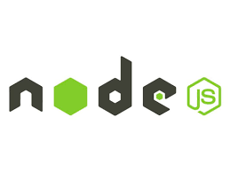

Node.js یک محیط اجرایی برای جاوااسکریپت است که به شما امکان میدهد کدهای جاوااسکریپت را خارج از مرورگر (معمولاً روی سرور) اجرا کنید. Node.js بر پایه موتور V8 کروم ساخته شده و از یک مدل Event-Driven و Non-Blocking I/O استفاده میکند که آن را برای برنامههای تحت شبکه سبکوزن و کارآمد ایدهآل میسازد.
Node.js توسعه Full-Stack را تنها با یک زبان (JavaScript) ممکن ساخته است.